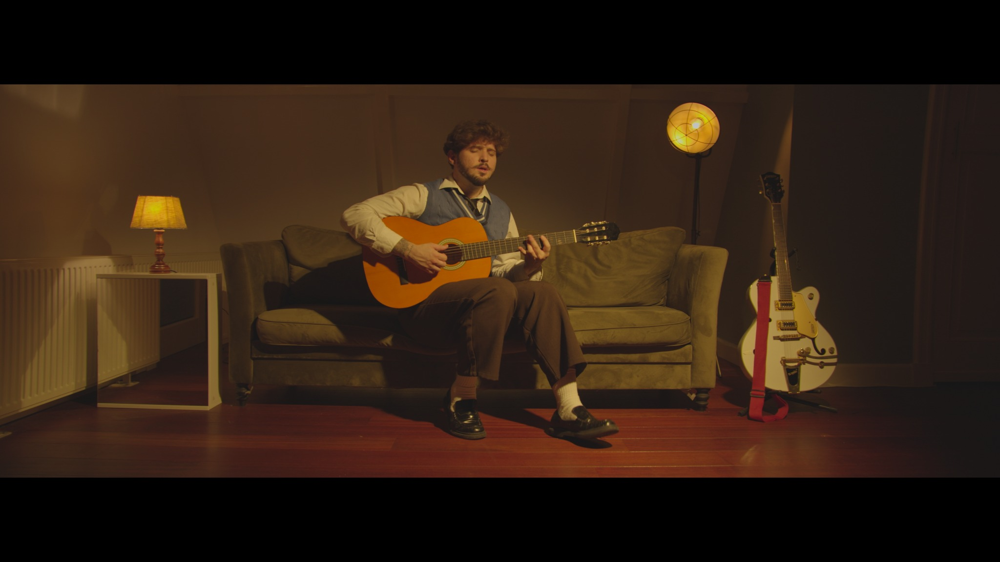
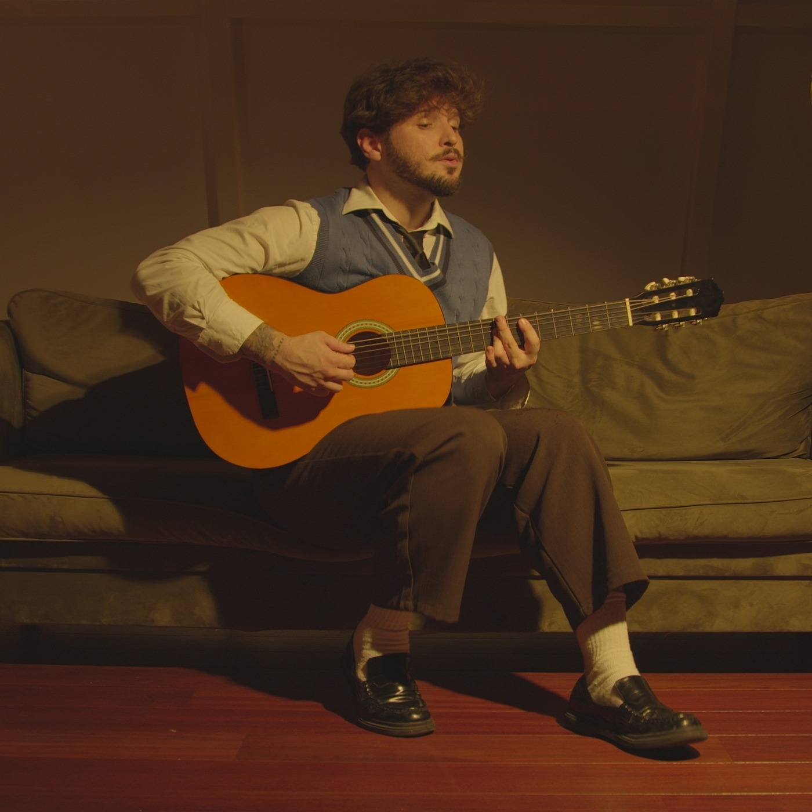
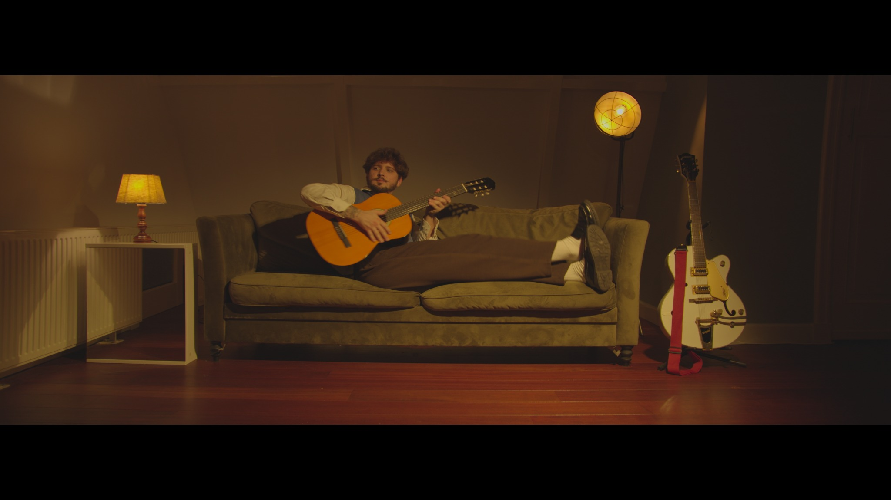
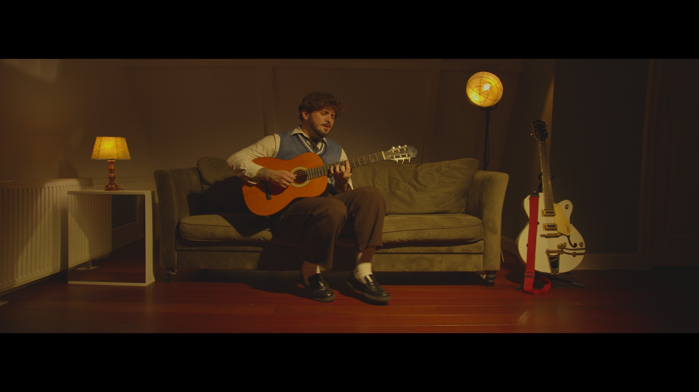
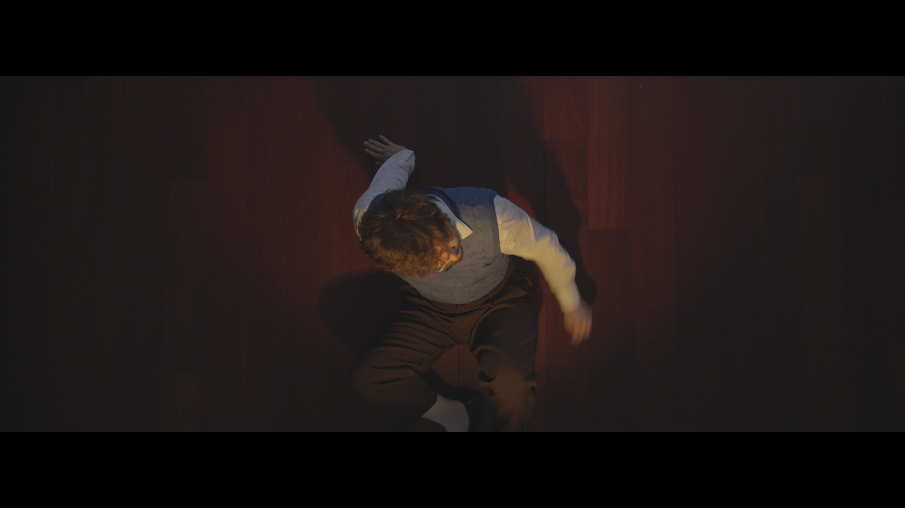
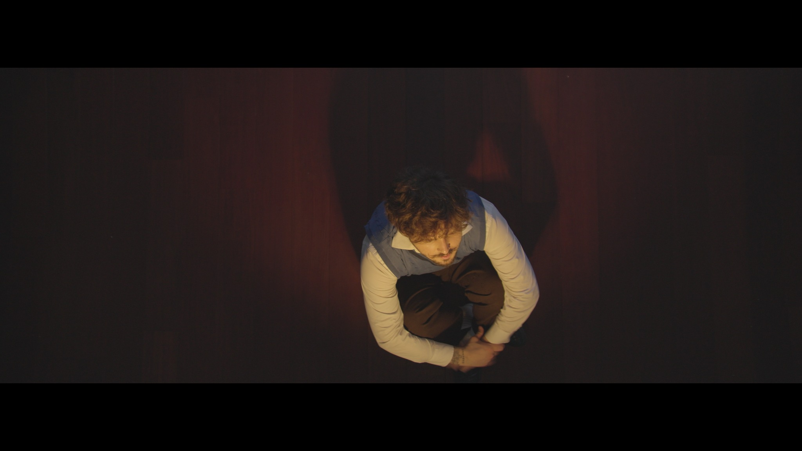
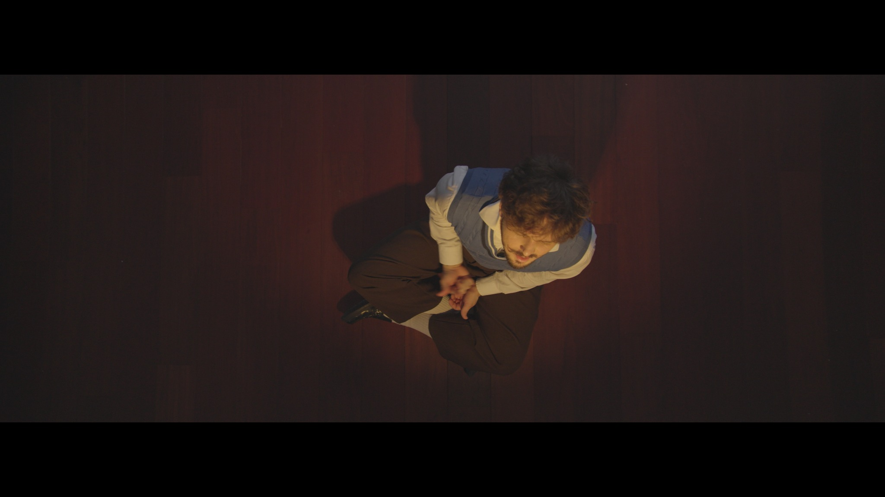
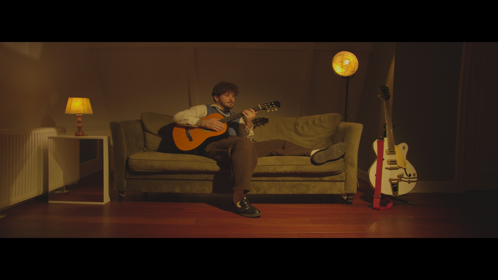

INDEPENDENT MUSIC / AMSTERDAM
GERMANO
Now & Then / DREAMER
The debut single. Out now.
DEBUT SINGLE / 15 SEPTEMBER 2026
Now & Then
The first song from Dreamer.
Indie pop, bedroom pop and alternative — an intimate beginning to a new recorded chapter.
OPEN ON SPOTIFY

DREAMER.
Seven songs. A world built around intimate songwriting, movement and memory. Beginning with Now & Then, the debut project unfolds toward March 2027.
THE STORY
Built room
by room,
city by city.
Wilany Germano is an Amsterdam-based solo artist working across indie pop, bedroom pop and alternative music.
His music grew first through live performances and self-booked European shows — before arriving at the recorded world of Now & Then and Dreamer.
VOICE / GUITAR / ORIGINAL SONGWRITING
Movement & stillness.
ORIGINAL STILL PHOTOGRAPHY / NOW & THEN


of storytelling."
The music began on stage.
Selected past performances — not a list of upcoming dates.

In the frame.
Every photograph is an original uploaded still. No AI-created replacements. Select a frame to view the source image.
For the
next chapter.
Press, live bookings, creative collaborations and inquiries.
wilany.germano@hotmail.com DOWNLOAD THE 2026 PRESS KIT INSTAGRAM / @WILANYGERMANO WATCH THE FILM / VIMEO